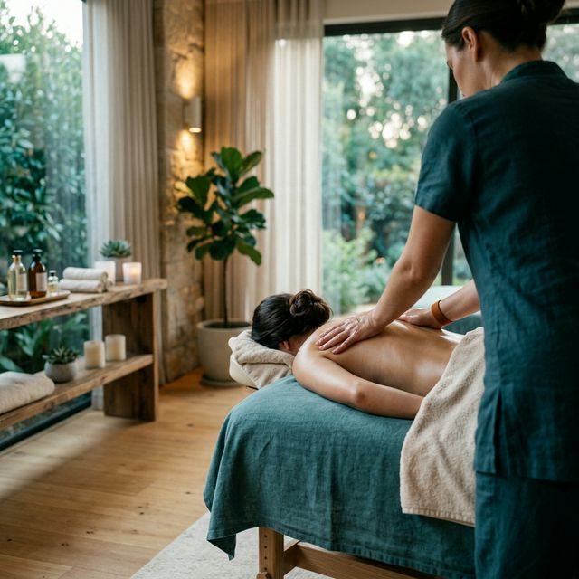

A tested kéri.
Hallgass rá.
A masszázs számos pozitív hatással van a testre és a lélekre, ezért több mint egyszerű kényeztetés. Ugyan csodára nem képes, mégis sokat javíthat az általános közérzeten és a fizikai állapoton. Segít ellazítani az izmokat, nyugtatja az elmét, javítja a nyirok- és vérkeringést, támogatja az immunrendszert, továbbá javítja az alvásminőséget is.
+36 30 123 4567Miért fontos a gyógymasszázs?
Testednek ugyanúgy szüksége van rendszeres karbantartásra, mint bármi másnak, amire számítasz az életben.
Fájdalomcsillapítás
Fokozza az endorfin és oxitocin felszabadulását, melyek természetes fájdalomcsillapítóként hatnak, miközben az idegpályákon közvetlenül is gátolja a fájdalomérzet terjedését.
Stresszoldás és alvás
Aktiválja a paraszimpatikus idegrendszert, csökken a kortizolszint, javul az alvásminőség.
Vérkeringés javítás
Élénkíti a vér- és nyirokkeringést, segíti a szervezet méregtelenítését, a szövetek oxigénellátását és regenerációját, valamint támogatja az immunrendszert.
Tartásjavítás
Korrigálja a rossz testtartásból eredő izomegyensúly-zavarokat és megelőzi a további problémákat.
Szolgáltatások
Minden kezelés személyre szabott, az Ön állapotának és igényeinek megfelelően.
Svédmasszázs
RelaxálóAz alapvető svédmasszázs, amely feloldja az izmok feszültségét és mélyrelaxációt biztosít.
Sportmasszázs
AktívIntenzív technikák sportolók és fizikailag aktív emberek számára, felgyorsítja a regenerációt és megelőzi a sérüléseket.
Triggerpont-terápia
CélzottPontosan lokalizált nyomáspontok kezelése, amely megszünteti a kisugárzó fájdalmakat és az izomcsomókat.
Hogyan működik?
Három egyszerű lépés az Ön jobb közérzetéhez.
Időpontfoglalás
Hívjon telefonon vagy írjon üzenetet, megbeszéljük az Önnek megfelelő időpontot.
Konzultáció
Az első találkozáskor felmérjük az állapotát és megtervezzük a személyre szabott kezelést.
Kezelés és utókövetés
A kezelés után tanácsokkal látjuk el, és nyomon követjük a fejlődést.
Mit mondanak az ügyfelek?
„Évek óta küzdöttem hátfájással. Néhány alkalom után érezhetően javult az állapotom. Végre tudok rendesen aludni!"
„Sportoló vagyok, és a rendszeres sportmasszázs nélkül már el sem tudom képzelni az edzéstervem. Profi munka!"
„A stressz az egészségemre ment. A gyógymasszázs visszaadta az egyensúlyomat, most már heti rendszerességgel járok."
Kapcsolat
Kérdése van vagy időpontot szeretne foglalni? Keressen bátran!
Budapest, XI. kerület
Pontos cím egyeztetés után